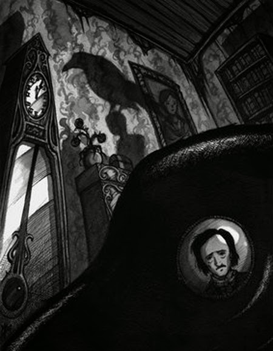
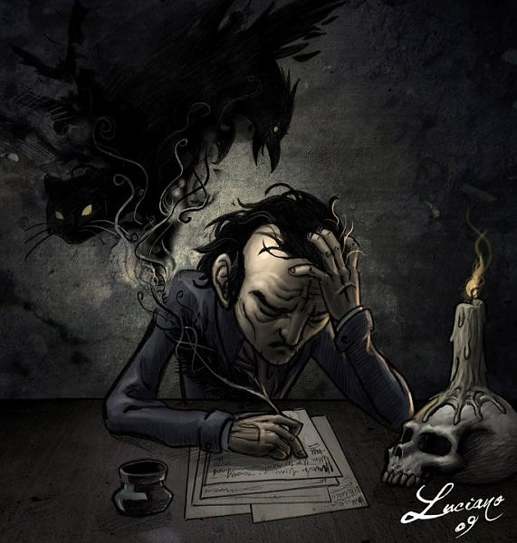

Es considerado como un cuento poema o narrativa corta, se desarrolla en un hambiente muy gotico, oscuro o lugubre. A traves de 108 versos la forma narrativa de Poe, llena al lector de miedo y a la vez de melancolia, todo lo que lleva la perdida de un amor. Toma este sentimiento tan común , tan humana para unir al lector con el sufrimiento del pesonaje de la historia y asi adentrarte a está misma.
En la historia se nos presentan dos personajes principale, el cuervo y el hombre que sufre la perdida de su amada, aquel que la soledad, la tristeza, el dolor , la angustia y la incertidumbre sobre el paradero de su amor. Un ser cuyo dolor comienza a generarle alucinaciones. Por otro lado tenemos al cuervo, animal que representa segun la mitología nordica al pensamiento y a la memoría, reflejando su triste por su amada y lo sólo que le dejo , un ave cuyas palabras son las de "nunca más", en un intento de auxilio a su soledad, y que su mente le trata de ayudar para salir de ese dolor, con un mensaje que podria llegar a ser positvo.
 Es una historia que narra el sufrimiento ocasionado por la perdidad de un ser querido,y las afectaciones que puede ocasionar. Es un llamado a tratar de superar la perdida, es un mensaje de consuelo en que no seguiras sufriendo. La forma de Poe al narrar, lo hace con versos, como un poema que te lleva de la mano con el sufrimiento del probre ser lastimado, y sus intenciones por sanar, pero se ha alejado de todo.
El texto narra la misteriosa visita de un cuervo parlante a la casa de un amante afligido, y del lento descenso hacia la locura de este último. El amante, que a menudo se ha identificado como un estudiante, llora la pérdida de su amada, Leonora. El cuervo negro, posado sobre un busto de Palas Atenea, parece azuzar su sufrimiento con la constante repetición de las palabras «Nunca más» (Nevermore).